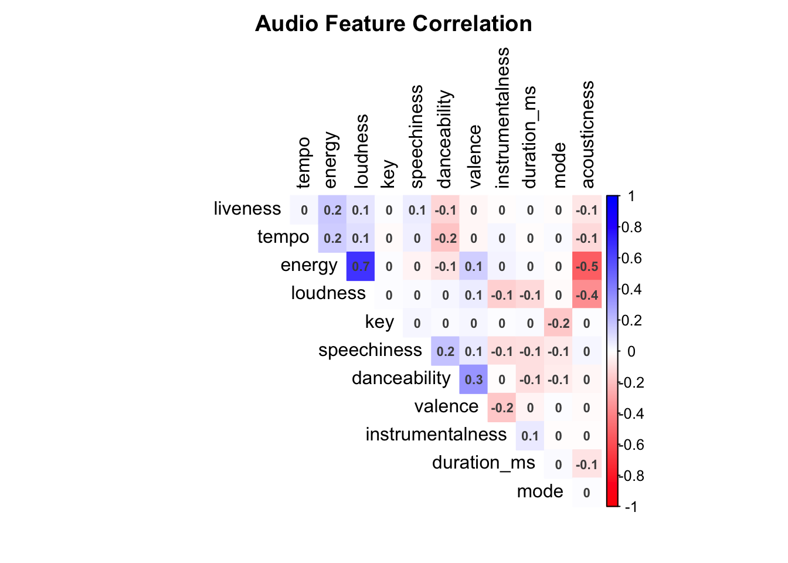

Chapter 8 Clustering of various artists on the basis of genres

Here to depict the top 15 artists in each of the 6 playlist genre, we used a Treemap. The different colors demarcate the different genres whereas the size of the boxes in the treemap corresponds to the number of tracks played by listeners of an artist. Listeners of edm music clearly show more affection towards the songs produced by Martin Garrix, Dimitri Vegas & Like Mike and Hardwell. For all the other artists there is no dominance.
Similar preferrance can be seen for Queen and Guns N Roses band in rock and Don Omar, Daddy Yankee and Wisin and Yandel in Latin. For songs that fall in the genre of Pop and r&b, the listeners have a diverse choice and no band or group of musicians are dominating. It can also be observed that a lot of artists/groups that are popular in edm have shown remarkable popularity in pop. For example- David Guetta and Calvin Harris are amongst the few artists to feature in more than 1 genree of top 15 artists.
Lastly based on the overall size, it can be seen that edm and rap cover a larger area of treemap thus indicating that these genres are most popular along the other 4 genres. While, pop and r&b show lower popularity amongst the listeners of the spotify dataset.
This visualisation can help artists keep track of other popular artists in different genres. This can also help them understand which artists/bands to look upto i.e their advertisement/ marketing strategies et al. if they plan on releasing songs outside of their genre.
#Coorelation plot of various audio features
 The correlation heat map between unique attributes of the audio feature provides comprehensive information on how these features are related to one another. For instance, energy and loudness seem to be positively related. This means if an artist is producing a song intending to excite or energize its listeners, then he can keep the loudness on the higher side. Usually, analyzing a combination of unique audio features works out well for the artist and the audience. For instance, a high valence and instrumentalness would work well for danceability. This will also help them segregate the song into the correct genre.
Besides, such combinations will also help them to be mindful of eccentric combinations. For example, features that are negatively correlated will not go well together. For instance, a high acousticness can negatively impact the energy of the listener. Similarly, if the song is mostly instrumental, the artist should keep the loudness of the song low such that it has a soothing effect on the listener as they are negatively related.